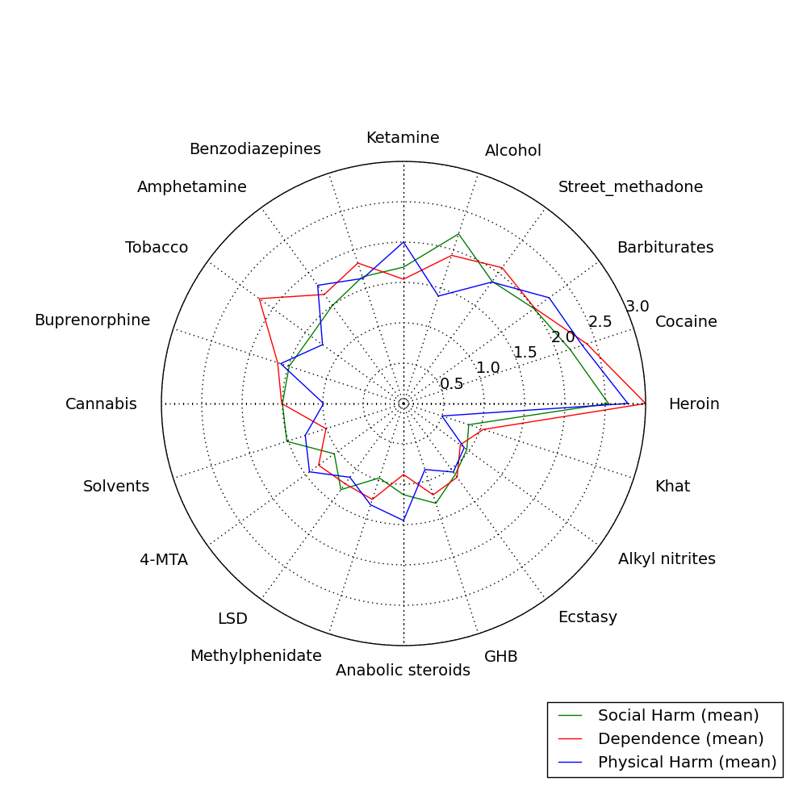
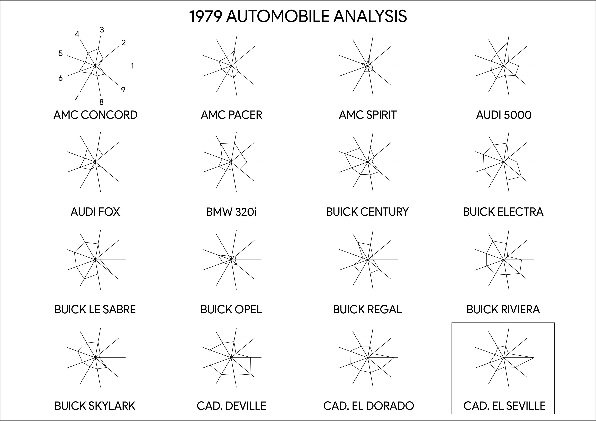
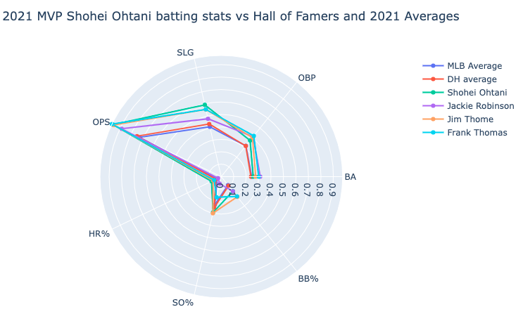
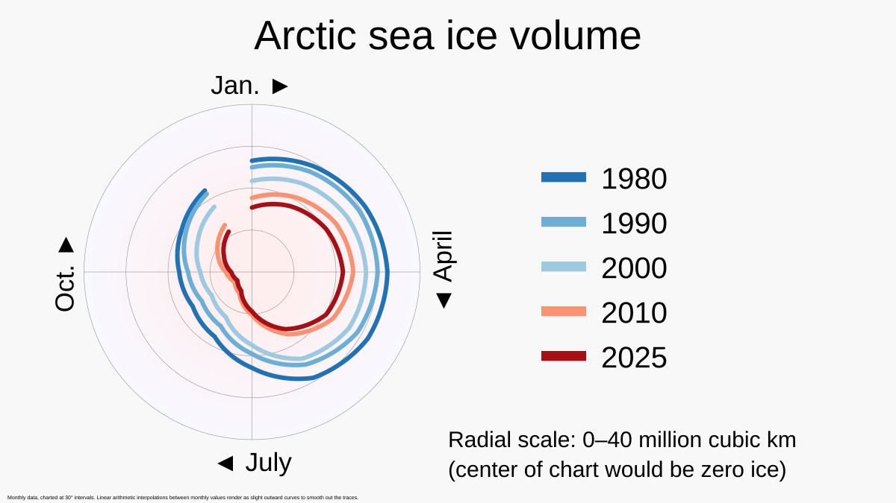

Radar / spider chart
About
A radar chart (also called a spider or star chart) plots several quantitative variables on axes that radiate from a shared center, then connects the points into a closed polygon. The shape of that polygon becomes a recognizable profile, letting you compare a small number of entities across many attributes at once — heuristic-evaluation scores, competitive feature coverage, or persona attribute strengths. Its appeal is pattern recognition: a lopsided shape tells a story faster than a table of numbers.
When to use
Use a radar chart to compare a few items across four to eight comparable dimensions where the overall shape or balance matters more than precise values — for instance contrasting two products' strengths, or showing where a design scores well and poorly across usability heuristics.
When not to use
Avoid radar charts when you have many overlapping series (the polygons turn to spaghetti), when readers must extract exact values, or when the axes use non-comparable units. The enclosed area also scales with the square of the values, which can visually exaggerate differences — interpret it with care.
References
Examples
Click any example to view full size and visit the original source.




